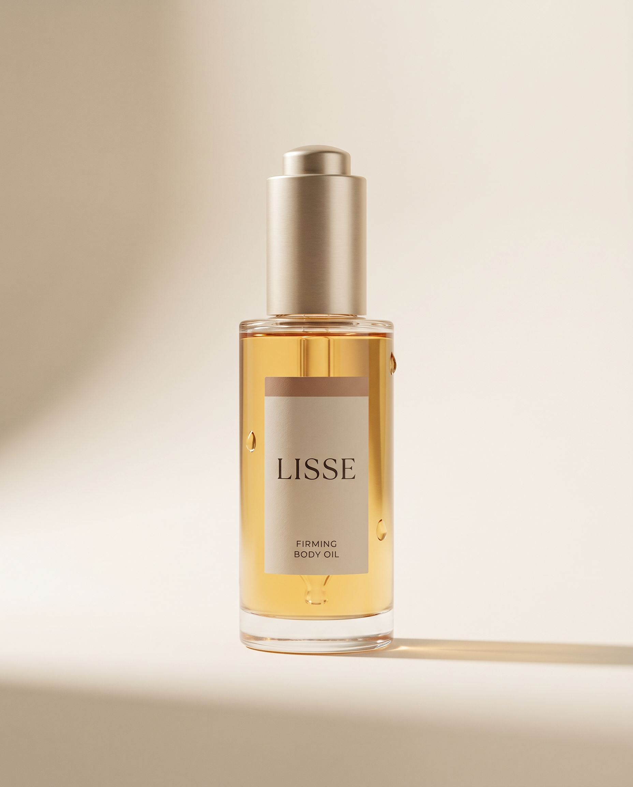
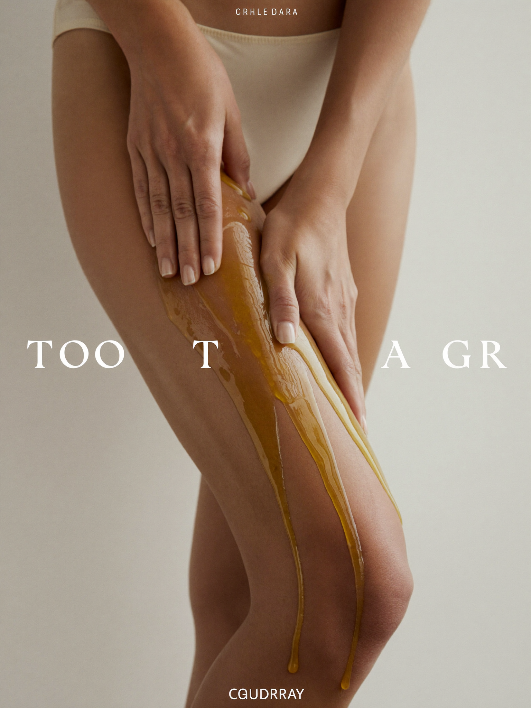
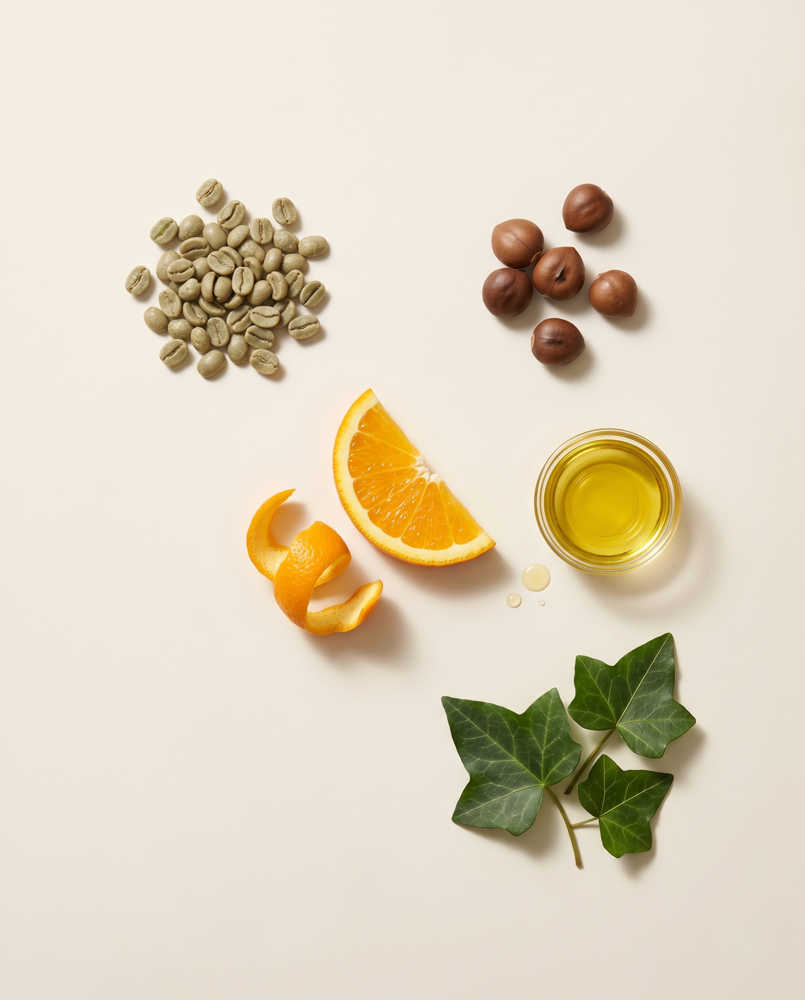
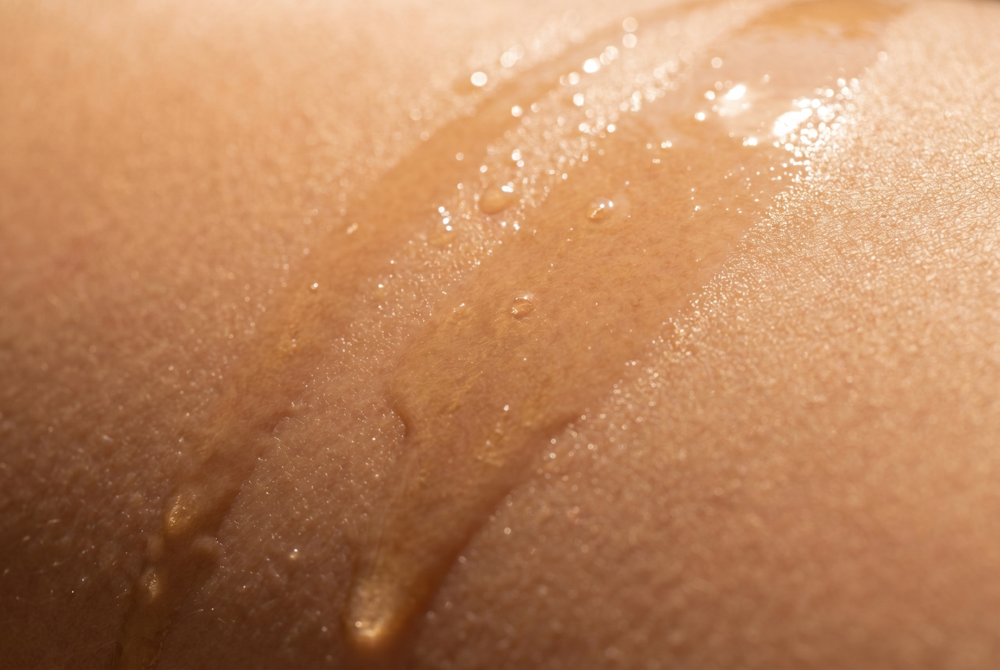

Firmer skin,
by the morning.

A lightweight, fast-absorbing body oil with caffeine-rich green coffee and guarana that visibly firms, smooths and nourishes — in one quiet minute a day.
Shop the Oil · $48
Visibly firmer, smoother skin.
LISSE is built around one job: helping skin look and feel firmer. Caffeine-rich actives support microcirculation while skin-identical oils restore softness and bounce — so your body looks toned, hydrated and healthy.
- ✓ Visibly firms & smooths the look of dimpling
- ✓ Deeply nourishes without a greasy film
- ✓ Improves the look of stretch marks & dryness
- ✓ A calming, sensorial minute for yourself
Four plant actives that pull their weight.
Green Coffee caffeine
Energises and visibly firms the look of skin.
Guarana + tone
A natural caffeine boost to support microcirculation.

Bitter Orange smooth
Helps refine and even the look of skin texture.
Ivy Leaf de-puff
A classic botanical for a smoother, tighter look.

A dry-touch oil that vanishes in seconds.
Most body oils leave you waiting — and sticking to your clothes. LISSE is formulated with weightless squalane and jojoba that sink in fast, leaving skin satin-soft and never greasy. Dress in a minute, not ten.
Sinks in, no residue.
A soft, clean warmth.
Gentle enough for every day.
What's not in the bottle.
- Silicones
- Mineral oil
- Parabens
- Synthetic fragrance
- Drying alcohol
- Phthalates
- Dyes
- PEGs
- Sulfates
- Microplastics
- Animal testing
- Empty "firming" claims
Just skin-loving botanicals and carrier oils your body actually recognises.
Your daily firming ritual.
- 1
Warm
Press 4–6 drops between your palms.
- 2
Massage
Sweep upward over thighs, tummy & arms.
- 3
Absorb
It sinks in fast — dress straight away.
- 4
Glow
Repeat daily for a firmer-looking finish.
Firm from head to toe.
6,400 verified reviews
"Eight weeks in and my thighs genuinely look smoother and firmer. And it smells like nothing — I love that."
Marina L."It actually absorbs. I put it on and get dressed straight away — no greasy sheets, no waiting around."
Priya S."Used it through my whole pregnancy. Skin stayed soft and my stretch marks are far less noticeable."
Hannah W."The one-minute ritual is the only self-care I keep up with. My skin has never looked better."
Dani R.I tried every firming cream on the shelf. They were either tacky, heavily perfumed, or made of promises and silicone. Nothing I actually wanted to use every day.
So we made the opposite: a clean, dry-touch oil with real caffeine-rich actives, no synthetic fragrance, and a texture that disappears. Something simple enough to become a daily habit — because consistency is what actually changes how skin looks.
One bottle. One minute. I hope it becomes your favourite part of the morning.
CamilleGet 10% off your first bottle.
Plus simple skin notes and first access to new drops. No spam, unsubscribe anytime.